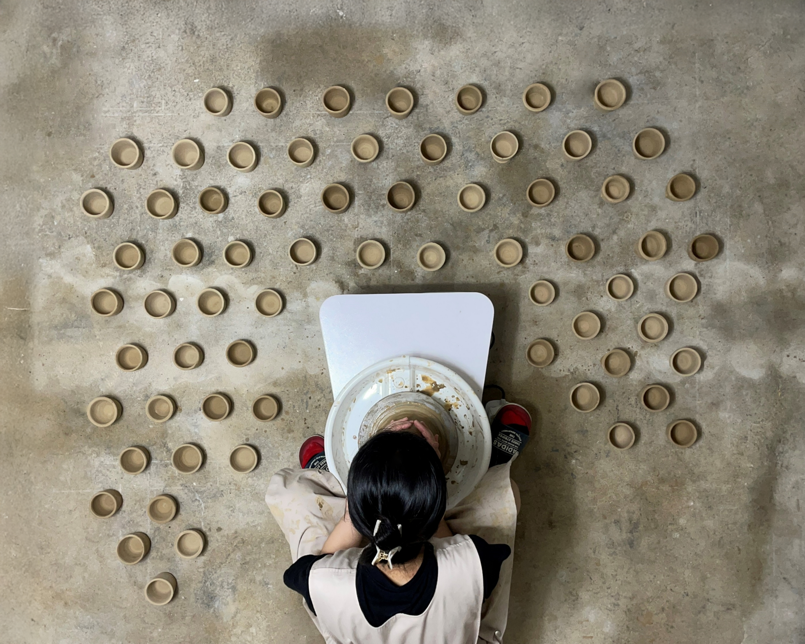

Chai Wala
2023
single channel video, sound
00:04:10

2023
single channel video, sound
00:04:10
This video work explores the cyclical transformation of traditional Indian chai cups, following the life cycle of clay as it takes on a particular form, serves a temporary purpose, and eventually returns to the earth.
The work focuses on the relationship between humans and materials through everyday acts of making, using, and returning objects to nature. Formed from earth by human hands, the cups serve as everyday vessels, but gradually lose their original form over time and become reintegrated into the natural environment. Through this process, the boundary between human activity and natural transformation becomes increasingly blurred. Humans are not merely users of materials, but participants in their ongoing cycles. In this way, everyday human actions become part of the larger cycles occurring in nature.
In this work, destruction is understood not as the endpoint at which an existing form disappears, but as a process through which matter transitions into another state of existence. Matter continuously circulates, taking on different forms, and humans are likewise inseparable from these processes of transformation. The work reveals how humans and matter are interconnected within a shared cycle, continuously influencing one another.
이 비디오 작업은 인도의 전통적인 차이(Chai) 잔이 순환적으로 변형되는 과정을 탐구한다. 점토가 특정한 형태를 갖추고 일시적인 쓰임을 거친 뒤, 다시 흙으로 돌아가기까지의 생애 주기를 따라간다.
이 작품은 만들고, 사용하고, 다시 자연으로 돌려보내는 일상적인 행위를 통해 인간과 물질 사이의 관계에 주목한다. 인간의 손을 통해 흙으로부터 만들어진 잔은 일상의 도구로 사용되지만, 시간이 지나면서 점차 본래의 형태를 잃고 자연환경 속으로 다시 편입된다. 이 과정에서 인간의 활동과 자연의 변형 사이의 경계는 점차 모호해진다. 인간은 단순히 물질을 사용하는 존재를 넘어, 물질의 지속적인 순환에 관여하는 존재가 된다. 이처럼 인간의 일상적인 행위는 자연에서 일어나는 더 큰 순환의 일부가 된다.
이 작품에서 파괴는 단순히 기존의 형태가 사라지는 종결점이 아니라, 물질이 또 다른 존재 상태로 이행하는 과정으로 이해된다. 물질은 끊임없이 형태를 바꾸며 순환하고, 인간 역시 이러한 변형의 과정으로부터 분리된 존재가 아니다. 인간과 물질의 관계를 서로 영향을 주고받으며 하나의 순환 속에 연결되어 있는 상태로 바라본다.